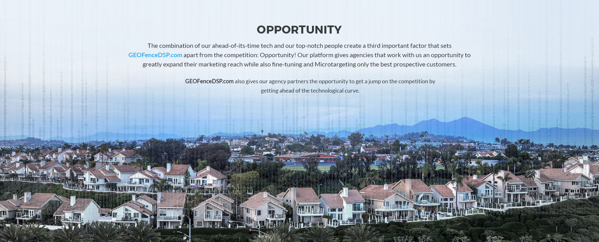

A trio of important factors set us
apart from the competition.
There are many options your agency could approach for mobile marketing and GEOFencing solutions. But GEOFenceDSP.com offers an unbeatable combination of new-school, cutting edge Microtargeting technology, people who are industry leaders, and opportunities to be on the leading edge of the field and outpace your competition.
GEOFenceDSP’s innovative technology allows you to target any device that crosses our fenceline. Once a device crosses into a fenced off area, we can continue to send display ads to that device regardless of its current location. It’s as simple as a potential customer walking past your store.
GEOFenceDSP’s innovative technology allows you to target any device that crosses our fenceline. Once a device crosses into a fenced off area, we can continue to send display ads to that device regardless of its current location. It’s as simple as a potential customer walking past your store.
